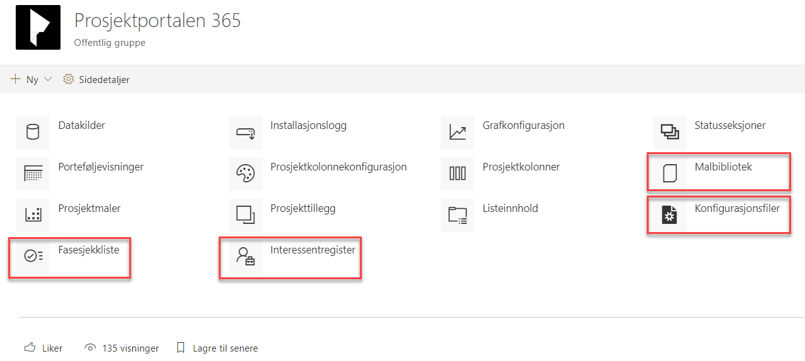

Standarddokumenter, standardinteressenter, standardoppgaver og standard fasesjekkpunkter vedlikeholdes på porteføljenivå, og kan enkelt endres av en administrator eller bruker med riktig tilgang. Når Prosjektportalen installeres, fylles flere av disse listene med standardinnhold fra Prosjektveiviseren.
Innhold fra listene og biblioteket vil kunne kopieres inn i alle nye prosjekter som blir opprettet i denne porteføljen (dette er valg som kan gjøres ved opprettelse av et nytt prosjekt).
Innhold vedlikeholdes i Konfigurasjon av Prosjektportalen som du finner under avsnittet for ‘Utseende og funksjonalitet’ i områdeinnstillinger. I bildet under er de fire standardlistene markert.
Trykk på den du ønsker å endre innhold i for å legge til, fjerne eller endre elementer.
